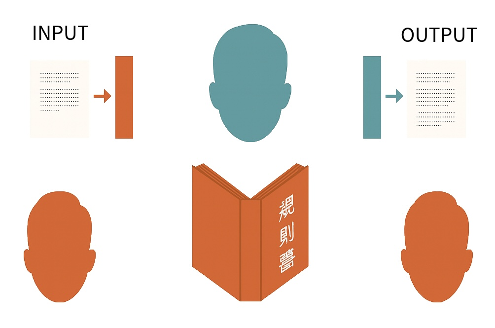
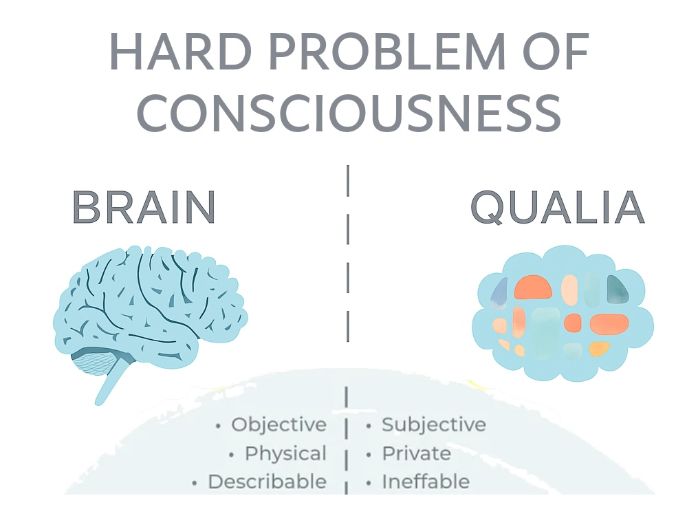
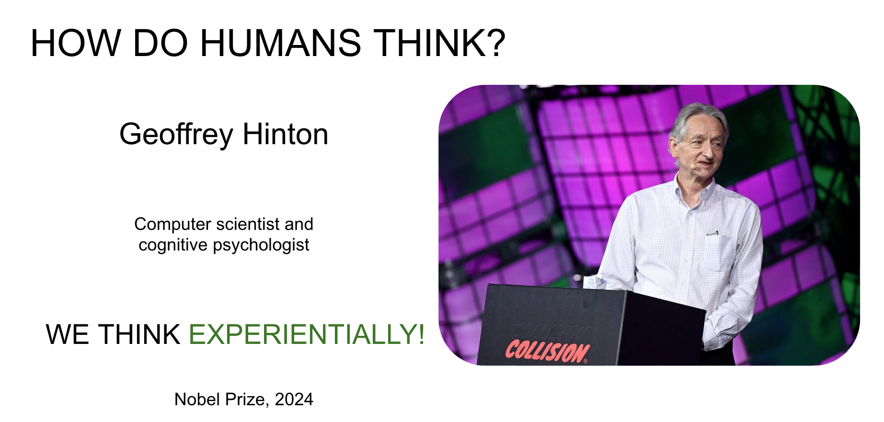
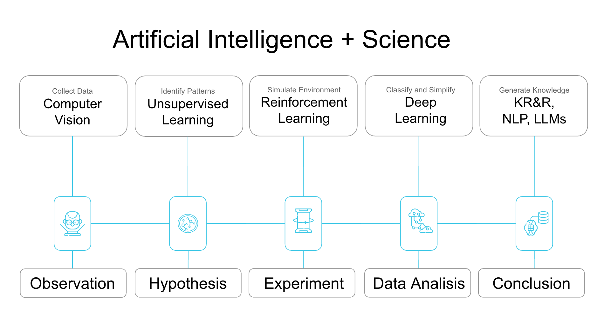

flowchart TB
Title([" **Cattell–Horn–Carroll <br/> Theory** "])
Title --> GI("**General**<br>**Intelligence**")
GI("**General<br>Intelligence**"):::main
GI --> MC("**Motor Control**")
GI --> SP("**Sensory Perception**")
GI --> FA["**Focused Attention**"]
GI --> K("**Knowledge**")
2 AI for Everyone: An Introductory Overview
Goals
In this chapter, we introduce artificial intelligence to a non-specialist audience. We cover key terminology and the basic principles of intelligence, artificial intelligence, and machine learning. By the end of the chapter, participants will have a solid foundation for the subsequent chapters.
2.1 The Foundations of Intelligence
Before reading the definition, take a moment to consider: In your own words, what is AI?
What is AI?
Artificial Intelligence (AI) is the field concerned with building computer systems that perform tasks typically requiring cognitive functions associated with human intelligence, such as pattern recognition, learning from data, and making predictions.
For a time, one of the goals of AI was to pass the Turing test. The first program often considered to pass a variation of the Turing test was Eugene Goostman, which simulated a 13-year-old boy from Odessa, Ukraine. It passed the Turing test in 2014. Modern chatbots, such as ChatGPT-4, arguably can easily pass the Turing test.[1] However, as early as the 1980s, philosophers like John Searle argued that passing the Turing test does not prove that a machine is intelligent. This concern is increasingly relevant today. Searle often illustrated his argument with the Chinese Room thought experiment.
- Imagine a person who knows no Chinese locked in a room.
- Outside, native Chinese speakers pass written questions into the room.
- Inside, the person uses a large rulebook to match the input characters with appropriate responses.
- The person inside then passes the answers back out.
To outsiders, the room appears to “understand” Chinese, yet the person inside has no comprehension of the language’s meaning. Searle argued that a computer running a program is analogous to the person following the rulebook: it manipulates syntax without understanding semantics. Thus, behavioral imitation alone is not evidence of true intelligence.

Whether one finds Searle convincing, the example highlights a gap between performance and actual intelligence.
Artificial General Intelligence
Most modern AIs are narrow, or “weak” AIs. The opposite concept, originally envisioned as “strong AI,” is now referred to as Artificial General Intelligence (AGI). AGI is often described as human-like intelligence.
But that raises a big question! What exactly is human intelligence?
Generally speaking, human intelligence is the capacity to learn from experience, identify patterns, handle abstract concepts, and apply knowledge to shape the environment. Yet, these are only functional descriptions. The core, or what many consider a distinguishing feature, is the presence of self-awareness and a subjective feel of an experience. But the evolutional reason for thier existence remains controversial: why does self-awareness matter for cognition, and what evolutionary advantage does subjective experience provide?

In the philosophy of mind, this phenomenon is referred to as qualia, and there is still no conclusive scientific answer to why qualia exist. Some argue that consciousness or self-awareness is an emergent property, and it appears when the system becomes complex enough; others propose that it is fundamental. These questions are all part of the Hard Problem of Consciousness. Interested readers can explore scientific theories of consciousness.
What is an Intelligent Agent?
Intelligent Agent is an entity that can perceive and interact with its environment autonomously.
Humans can be seen as one type of intelligent agent, maintaining internal bodily processes and responding to environmental changes. Several attempts have been made to define general intelligence in terms of cognitive abilities. One such theory is the Cattell-Horn-Carroll (CHC) theory, which divides general intelligence into four core abilities: motor control, sensory perception, focused attention, and knowledge. Cattell-Horn-Carroll
Studying intelligence and consciousness presents a fascinating yet complex set of problems. For now, let’s narrow our focus and ask a simpler question:
How do humans think?
Behaviorism
Before the 1950s, psychology was dominated by behaviorism, which held that internal mental processes were either unknowable or scientifically irrelevant. Instead, behaviorists focused on mapping observable stimuli to observable responses.
Cognitive Revolution
During the cognitive revolution of the 1950s–1970s, researchers inspired by digital computers began proposing explicit rule-based models of thinking, often using if/then representations—a so-called symbolic approach (e.g., “If I drink tons of coffee, I’ll be jittery”).
Probabilistic Reasoning
Starting in the late 1970s, a new perspective emerged: psychologists noticed that humans often think experientially. For example, based on today’s cloud cover and similar past experiences, one might infer a high probability of rain and decide to carry an umbrella. Geoffrey Hinton, who won the Nobel Prize in 2024, was a pioneer in this field. He demonstrated that such experiential reasoning can be modeled using probabilistic computations, laying the foundation for modern machine learning algorithms.

2.2 Types of Artificial Intelligence
Before we jump into machine learning in depth, it is important to highlight that there are several distinct approaches to developing AI. In this course, we will focus primarily on ML, especially neural networks, as they currently dominate the field. However, not all AI techniques rely on machine learning principles. Just as human reasoning includes multiple modes, such as probabilistic, inference, and symbolic logic, the development of AGI will require combining a variety of paradigms.
| AI Technique | Description |
|---|---|
| Symbolic (Logic-Based) | Uses logical rules and symbolic representations to encode and manipulate knowledge. Focuses on deductive reasoning. |
| Genetic (Evolutionary) | Optimization algorithms inspired by natural selection. |
| Fuzzy Logic | A form of logic that works with “degrees of truth”, making it useful for uncertain or ambiguous scenarios. |
| Knowledge Representation and Reasoning (KR&R) | Structures information using ontologies, semantic networks, and formal logic to support reasoning tasks. |
| Bayesian Networks | Probabilistic graphical models that capture dependencies between variables, enabling inference under uncertainty. |
Real-world systems, such as self-driving cars and voice assistants, are typically hybrids. They combine deep learning for perception, symbolic reasoning for structured knowledge, and probabilistic filtering for uncertainty management. This integration helps meet critical requirements for safety, robustness, and interpretability.
2.3 Machine Learning
What is ML?
Machine Learning (ML) is a subfield of AI focused on algorithms that enable computers to learn patterns from data and build probabilistic models.
{kind=link}
Supervised Learning involves learning from labeled data, where models directly learn from input-output pairs. These models are generally simpler in terms of training and achieve high performance. With a labelled dataset, you already know the correct output for every input, so you can optimise model parameters to fit the answer. We will explore them in-depth through the course.
Semi-Supervised Learning combines a small amount of labeled data with a large amount of unlabeled data, often using auto-labeling techniques. Examples include self-training models, where a model iteratively labels data to improve, and Graph Neural Networks (GNNs), which are useful for understanding relationships between data points.
Unsupervised Learning relies on unlabeled data, focusing on identifying patterns or structures. Popular models include Autoencoders, Generative Adversarial Networks (GANs), and Restricted Boltzmann Machines (RBMs).
{kind=link}
2.4 Neural Networks
What is ANN?
Artificial Neural Network (ANN) is a computational model that transforms and interprets input data through layers. Analogous to biological neural networks composed of interconnected neurons, an ANN consists of nodes (basic processing units) arranged in connected layers.
{kind=link}
{kind=link}
Neural Networks Elements
The principle “neurons that fire together, wire together” [3] captures the idea that the strength of neuronal connections adjusts based on experience. Artificial neural networks mimic this by assigning each connection a weight that training continually adjusts. Larger weights reinforce patterns the network finds useful.
{kind=link}
Each node multiplies its inputs by their weights, adds the results, and feeds that sum into an activation function. The activation function decides if, and how strongly, the signal moves on to the next layer. When it does, we say the neuron is “activated.”
The Perceptron [4], one of the earliest and simplest neural network models, was invented in 1957 by psychologist Frank Rosenblatt. Rosenblatt’s Perceptron was a physical machine with retina-like sensors as inputs, wires acting as the hidden layers, and a binary output system.
{kind=link}
2.5 Backpropagation
Initially, neural networks were quite shallow feed-forward networks. Adding more hidden layers made training them difficult. However, in the 1980s—often referred to as the rebirth of AI—the invention of the backpropagation algorithm revolutionized the field.
It allowed for efficient error correction across layers, making it possible to train much deeper networks than before.
What is backpropagation?
Backpropagation is an algorithm that calculates the error at the output layer of a neural network and then “back propagates” this error through the network, layer by layer. It updates the connections (weights) between neurons to reduce the error, allowing the model to improve its accuracy during training.
{kind=link}
{kind=link}
Thus, the backpropagation algorithm enabled the training of neural networks with multiple layers, laying the foundation for the field of deep learning.
2.6 Deep Learning
Deep Learning
Deep Learning (DL) is a subset of ML that uses multilayered neural networks, called deep neural networks.
{kind=link}
Despite advances in backpropagation, deep learning, computing power, and optimization, neural networks still face the problem known as catastrophic forgetting — losing old knowledge when trained on new tasks. Current AI models are often “frozen” and specialized, needing complete retraining for updates, unlike even simple animals that can continuously learn without forgetting [5]. This limitation is one of the reasons that led to the development of specialized deep learning models, each with unique architectures tailored to specific tasks. Let’s explore how each of these models can be applied in scientific research!
{kind=link}
{kind=link}
{kind=link}
{kind=link}
{kind=link}
2.7 The Future of AI in Arctic Science
AI is transforming the scientific method by supporting each step of scientific discovery. Let’s consider how various AI techniques can be applied at each stage of the scientific process:
- Observation: Using computer vision for data collection.
- Hypothesis: Clustering data with unsupervised learning.
- Experiment: Simulating environments through reinforcement learning.
- Data Analysis: Simplifying and classifying data using neural networks.
- Conclusion: Combining LLMs with KR&R to generate complex findings and insights.

- AI already accelerates Arctic science: computer-vision models detect thaw features and permafrost extent; clustering algorithms flag anomalies; neural networks compress and classify multimodal data; and LLMs combined with knowledge graphs help researchers draw conclusions. These tools help turn petabytes of imagery and sensor data into testable hypotheses and valuable insights.
It’s important to note that, regardless of model type, high-quality data is essential for accurate AI predictions and insights. In the next sessions, we’ll explore practical tips for working with well-prepared, high-quality data.
2.8 Exercise: NN Playground
Let’s build intuition by experimenting with a neural network simulator for approximately 10 minutes.
{kind=link}
TensorFlow Playground is an example of a feed-forward network, where data flows only from the input layer to the output layer without feedback loops. Training a neural network involves automatically adjusting its internal parameters so that the network maps inputs to desired outputs with minimal error. As you press the play button, you can see the number of epochs increase. In an Artificial Neural Network, an epoch represents one complete pass through the training dataset.
Do You Have Any Questions?
Email: alyonak@nceas.ucsb.edu
Website: alyonakosobokova.com
YouTube: Dork Matter Girl